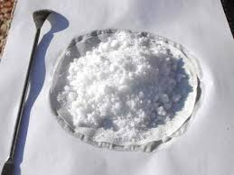

Chiamare "sintesi" questo esperimento è un po' pretenzioso: è talmente semplice che mi accontento del più modesto termine "preparazione".
Per come l'ho condotto io però quello che proprio ci vuole è un vero Ferragosto 2012, coi suoi 30-35 gradi costanti e un sole che spacca le pietre da mattina a sera.
Senza queste eccezionali condizioni meteo, uguali a quelle del famigerato 2003, scommetto che l'esperimento sarebbe stato una ciofeca e avrebbe probabilmente prodotto una schifosa pastella giallastra.
Dal prosieguo si capirà il perhè.
Ho vicino al lab quel famoso (famoso per questo blog!) muretto di cemento che uso come sostegno per la foto finale di quasi tutti i prodotti delle sintesi che faccio; in questo periodo me lo trovavo tutti i giorni talmente arroventato che il pensiero è corso a cercare un esperimentino che avesse bisogno di tutta quell'energia "evaporativa" (per di più del tutto gratuita) per la sua esecuzione.
Mi è venuto in mente di fare la classica condensazione ammoniaca-formaldeide che conduce all'esametilentetramina.
Io chiamo questo prodotto col vecchio nome di urotropina, dato che un tempo era usato come disinfettante delle vie urinarie ed il termine mi è sempre rimasto in mente.
Non ho seguito tante procedure più o meno sofisticate per aumentare un pochino la resa: sono andato giù di brutto come l'istinto mi suggeriva... verrà quello che verrà, mi son detto.
(E' uno dei rarissimi casi in cui il prezzo dei componenti non incide certo sul bilancio famigliare!).
La reazione in gioco è la seguente:
6 HCHO + 4 NH3 -> C6H12N4 + 6 H2O
Osserviamo la bella struttura del prodotto ciclico risultante:

Allora, in una di quelle roventi giornate di questa estate, ho semplicemente mescolato lentamente 200 ml di ammoniaca al 30% con altrettanti di formaldeide, più o meno della medesima concentrazione.
La reazione è discretamente esotermica, ma non ho nemmeno raffreddato.
Ho messo poi il becher (bello grande, almeno da 600 ml) sul muretto, lasciandolo evaporare per una settimana sotto un sole insopportabile per qualsiasi cristiano.
L'evaporazione è molto lenta e faticosa perchè l'urotropina è molto solubile in acqua e tende a trattenerla sempre più man mano che la concentrazione aumenta.
Per quello dicevo che serve un Ferragosto di quelli giusti...
Alla fine il liquido si era ridotto a qualche decina di ml, con parecchio prodotto precipitato dalla soluzione satura sotto forma di cristallini bianchi.
A questo punto ho filtrato e separato la prima aliquota di prodotto, dato che è inutile insistere con l'evaporazione spontanea nemmeno sotto quelle luciferine condizioni.
Per estrarre tutta, o quasi, l'esammina occorre procedere per evaporazione sotto vuoto.
Messa la soluzione in una beuta da vuoto, scaldando leggermente e collegando la pompa ad acqua si ottiene una ebollizione vigorosa, che con un po' di pazienza porta all'eliminazione quasi completa dell'acqua e alla precipitazione praticamente di tutto il prodotto.
Ho filtrato ancora, riunito tutto il solido ancora abbondantemente umido su una carta da filtro e... via sotto il sole ancora una volta, da mane a sera con 34 gradi all'ombra...

Ecco finalmente 32 g di prodotto finito (circa 72% di resa), bello cristallino, inodoro e bianco come neve zuccherina, esattamente come... non ci si aspetta da una procedurra improvvisata e della quale si faceva in partenza poco conto.
L'hexamine sublima senza fondere e brucia con fiamma pallida, senza lasciare residui (è un componente di tavolette combustibili da campeggio).
Avevo già questa sostanza nel mio reagentario, ma ne aggiungo volentieri anche questa di autosintesi, mettendoci sull'etichetta, oltre ai soliti dati, anche la fondamentale dicitura:
"estate 2012 fecit!".